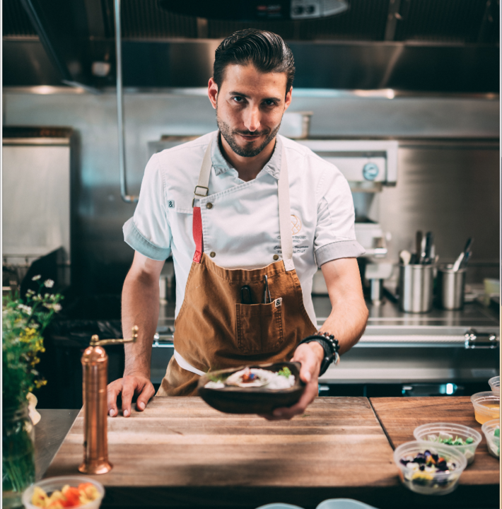
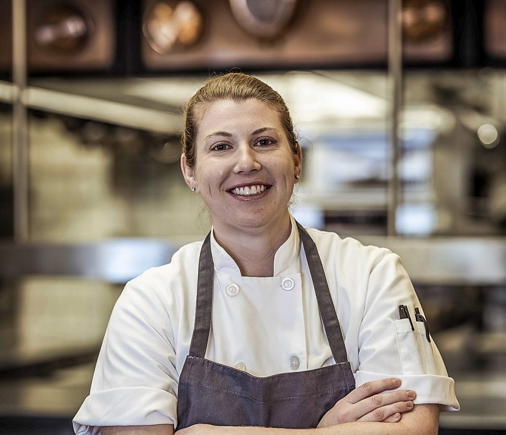

Welcome to Spice Mystery!
Chef Steave
CHEIF CHEF
Head of the kitchen. Responsible for menu creation, kitchen management, and overall operations.

Chef Millie
EXECUTIVE CHEF
Second-in-command. Assists the Cheif Chef in managing the kitchen and oversees day-to-day operations.

Chef Hopper
PASTRY CHEF
Head of the bakery and pastery.Manages desserts and baked goods.
Chef Eddie
JUNIOR CHEF
Works under the Chef de Partie to learn and assist in different stations.
Chef Nancy
STATION CHEF
In charge of a specific section of the kitchen (e.g., grill, pastry, or sauté station).

Chef Will
SAUCE CHEF
Specializes in making sauces, stews, and sautéed dishes.